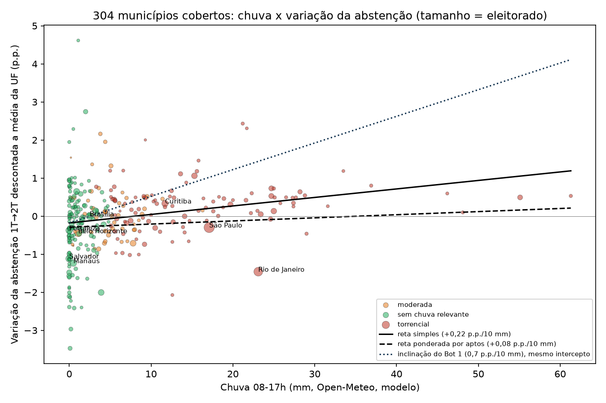
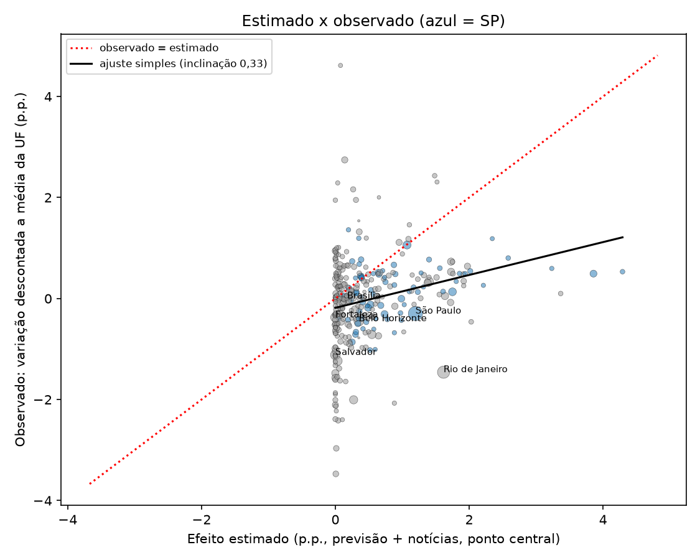

Números-chave
A estimativa comparada é a publicada no dia da eleição e congelada às 17:09 BRT (painel “Impacto estimado agora” da página principal e do dashboard), mantida sem alteração como registro histórico; atualizações encerradas às 17:10 BRT de 25/10/2026. O coeficiente do modelo não foi alterado.
Universo: 304 municípios cobertos pela estimativa final, 85.908.193 eleitores aptos no 2º turno (54,1% do eleitorado nacional); abstenção nesses municípios 20,76% → 18,60%. Medida observada: variação da abstenção do 1º para o 2º turno no município menos a variação da UF inteira. Essa variação não é a abstenção causada pela chuva. Inclinações por regressão com erro-padrão robusto (HC1), IC de 95%. Só SP (76 municípios): +0,14 p.p./10 mm (IC +0,07 a +0,21). Com peso: +0,08 (IC −0,17 a +0,34).
Gráficos


Faixas de chuva (08–17h, Open-Meteo)
| Faixa | Municípios | Aptos 2T | Observado, ponderado (p.p.) | Observado, média simples (p.p.) | Estimado, ponderado (p.p.) | Abst. extras estimadas | Observado acima da média da UF |
|---|---|---|---|---|---|---|---|
| 0 a 1 mm | 97 | 22.575.822 | −0,53 | −0,33 | +0,02 | 3.953 | −118.976 |
| 1 a 5 mm | 79 | 21.149.560 | −0,11 | +0,02 | +0,22 | 47.251 | −23.255 |
| 5 a 15 mm | 81 | 17.802.572 | +0,03 | +0,04 | +0,66 | 117.390 | 5.512 |
| 15 a 30 mm | 40 | 23.240.111 | −0,24 | +0,42 | +1,42 | 330.657 | −56.929 |
| 30 ou mais mm | 7 | 1.140.128 | +0,53 | +0,57 | +3,44 | 39.257 | 6.027 |
Capitais e grandes cidades
| Município | Aptos 2T | Chuva (mm) | Chuva usada (mm) | Abstenção 1T → 2T | Observado: var. descontada (p.p.) | Estimado (p.p.) | Abst. extras estimadas | Observado acima da média da UF |
|---|---|---|---|---|---|---|---|---|
| São Paulo (SP) | 9.145.969 | 17,1 | 17,1 | 23,39% → 20,36% | −0,30 | +1,20 | 109.467 | −27.252 |
| Rio de Janeiro (RJ) | 4.952.423 | 23,1 | 23,1 | 26,12% → 22,97% | −1,46 | +1,62 | 80.084 | −72.243 |
| Guarulhos (SP) | 948.903 | 15,3 | 15,3 | 19,25% → 17,58% | +1,06 | +1,07 | 10.163 | 10.059 |
| Campinas (SP) | 873.566 | 25,0 | 25,0 | 23,57% → 20,97% | +0,13 | +1,75 | 15.288 | 1.164 |
| Belo Horizonte (MG) | 1.966.758 | 1,1 | 5,0 | 23,61% → 20,67% | −0,45 | +0,35 | 6.884 | −8.833 |
| Curitiba (PR) | 1.415.021 | 11,7 | 20,0 | 19,72% → 17,52% | +0,33 | +1,40 | 19.812 | 4.704 |
Os 9 municípios com ajuste por notícias
| Município | Aptos 2T | Chuva (mm) | Chuva usada (mm) | Abstenção 1T → 2T | Observado: var. descontada (p.p.) | Estimado (p.p.) | Abst. extras estimadas | Observado acima da média da UF |
|---|---|---|---|---|---|---|---|---|
| Belo Horizonte (MG) | 1.966.758 | 1,1 | 5,0 | 23,61% → 20,67% | −0,45 | +0,35 | 6.884 | −8.833 |
| Curitiba (PR) | 1.415.021 | 11,7 | 20,0 | 19,72% → 17,52% | +0,33 | +1,40 | 19.812 | 4.704 |
| Campinas (SP) | 873.566 | 25,0 | 25,0 | 23,57% → 20,97% | +0,13 | +1,75 | 15.288 | 1.164 |
| Itapevi (SP) | 168.601 | 3,3 | 20,0 | 24,41% → 22,45% | +0,77 | +1,40 | 2.361 | 1.301 |
| Prudentópolis (PR) | 39.044 | 9,3 | 9,3 | 18,46% → 17,94% | +2,00 | +0,65 | 254 | 782 |
| Guaratuba (PR) | 32.487 | 6,2 | 6,2 | 25,79% → 23,40% | +0,13 | +0,43 | 141 | 43 |
| Barracão (PR) | 7.591 | 0,2 | 5,0 | 19,62% → 18,63% | +1,54 | +0,35 | 27 | 117 |
| São Domingos (SC) | 7.346 | 2,4 | 5,0 | 16,98% → 13,95% | −1,04 | +0,35 | 26 | −76 |
| Águas de Chapecó (SC) | 4.732 | 0,5 | 5,0 | 18,17% → 15,41% | −0,78 | +0,35 | 17 | −37 |
Municípios com 30 mm ou mais
| Município | Aptos 2T | Chuva (mm) | Chuva usada (mm) | Abstenção 1T → 2T | Observado: var. descontada (p.p.) | Estimado (p.p.) | Abst. extras estimadas | Observado acima da média da UF |
|---|---|---|---|---|---|---|---|---|
| Mogi Guaçu (SP) | 114.331 | 61,3 | 61,3 | 19,73% → 17,53% | +0,53 | +4,29 | 4.907 | 608 |
| São José dos Campos (SP) | 540.171 | 55,1 | 55,1 | 18,75% → 16,51% | +0,49 | +3,86 | 20.836 | 2.663 |
| Pouso Alegre (MG) | 112.431 | 48,1 | 48,1 | 22,12% → 19,73% | +0,10 | +3,37 | 3.785 | 111 |
| Guaratinguetá (SP) | 90.832 | 46,2 | 46,2 | 20,14% → 18,00% | +0,60 | +3,23 | 2.937 | 541 |
| Pindamonhangaba (SP) | 119.294 | 36,9 | 36,9 | 20,66% → 18,73% | +0,80 | +2,58 | 3.081 | 957 |
| Ubatuba (SP) | 77.907 | 33,5 | 33,5 | 24,69% → 23,14% | +1,19 | +2,35 | 1.827 | 924 |
| Itatiba (SP) | 85.162 | 31,6 | 31,6 | 19,54% → 17,07% | +0,26 | +2,21 | 1.884 | 223 |
Conclusão: estimativa do projeto x resultado oficial do 2º turno (25/10/2026)
Resumo do relatório comparacao_municipios_2turno.md (mesma pasta). Todos os números vêm de comparacao_municipios_2turno.csv e resumo.json, gerados por scripts/pos_eleicao/ a partir dos arquivos oficiais do TSE e da estimativa final do projeto.
Registro histórico. A estimativa comparada é a publicada no dia da eleição e congelada às 17:09 BRT (data/impacto/atualizacoes/impacto_agora_latest.json). Ela não foi alterada depois do resultado, e o coeficiente do modelo também não. A revisão do coeficiente proposta abaixo é apenas uma sugestão para discussão.
O que foi comparado
- Universo: os 304 municípios cobertos pela estimativa final, todos encontrados nos arquivos do TSE dos dois turnos. Somam 85.908.193 eleitores aptos no 2º turno (54,1% do eleitorado nacional).
- Medida observada: variação da abstenção do 1º para o 2º turno em cada município, descontada a variação média da UF.
- Abstenção nacional: 21,08% no 1º turno e 19,22% no 2º turno (−1,87 p.p.). Nos 304 municípios cobertos: 20,76% para 18,60% (−2,17 p.p.).
- Estimativa final (17:09 BRT, previsão + notícias): +0,34 p.p. na abstenção nacional (faixa +0,19 a +0,48), cerca de 538.510 abstenções extras (307.720 a 769.300). Somando os 304 municípios, as abstenções observadas acima ou abaixo da média de cada UF dão −187.621 eleitores.
Principais conclusões
- A direção é compatível com o modelo. Onde choveu mais, a abstenção caiu menos que a média do estado. Sem peso por eleitorado, a inclinação é de +0,22 p.p. por 10 mm de chuva (IC 95%: +0,14 a +0,31; erro-padrão robusto HC1).
- A magnitude ficou em cerca de um terço da usada. O coeficiente implícito é de 0,022 p.p. por mm (IC 0,014 a 0,031), contra 0,07 p.p./mm usado na estimativa (32% do valor). Regredindo o observado sobre o estimado, a inclinação é 0,33 (0,20 a 0,45) sem peso; a correlação entre estimado e observado é de 0,24.
- Com peso pelo eleitorado, o efeito não se distingue de zero. A inclinação ponderada é de +0,08 p.p. por 10 mm (IC −0,17 a +0,34). Com controle por porte do município, fica em +0,18 (IC +0,002 a +0,35), no limite da significância. Com efeito fixo de UF, a inclinação some (+0,03 sem peso, −0,08 com peso). Ou seja: o sinal depende muito de quais municípios pesam mais.
- As grandes capitais contradizem o modelo. São Paulo (17,1 mm) tinha estimativa de +1,20 p.p. e ficou 0,30 p.p. abaixo da média de SP. Rio de Janeiro (23,1 mm) tinha +1,62 p.p. estimado e ficou 1,46 p.p. abaixo da média do RJ. Como essas duas cidades concentram muito eleitorado, elas dominam o total nacional estimado. Guarulhos (15,3 mm) foi o caso que bateu: +1,07 estimado e +1,06 observado. Belo Horizonte (−0,45 observado x +0,35 estimado), Campinas (+0,13 x +1,75) e Curitiba (+0,33 x +1,40) ficaram acima ou próximos da média, mas bem abaixo do estimado.
- Os 7 municípios com 30 mm ou mais ficaram todos acima da média da UF, mas bem abaixo do estimado. Mogi Guaçu (61,3 mm), São José dos Campos (55,1), Pouso Alegre (48,1), Guaratinguetá (46,2), Pindamonhangaba (36,9), Ubatuba (33,5) e Itatiba (31,6): média observada de +0,57 p.p. acima da UF, contra +3,13 p.p. estimados em média.
- Os ajustes por notícias tiveram resultado misto. Dos 9 municípios ajustados, 6 ficaram acima da média da UF (Prudentópolis +2,00 p.p., Barracão +1,54, Itapevi +0,77, Curitiba +0,33, Campinas +0,13, Guaratuba +0,13) e 3 abaixo (Belo Horizonte −0,45, São Domingos −1,04, Águas de Chapecó −0,78). O estimado ficou acima do observado em 7 dos 9. Somados, os ajustados tinham 44.810 abstenções extras estimadas, contra −835 observadas em relação à média da UF. Com apenas 9 casos, não dá para dizer que os ajustes melhoraram a estimativa.
- Barracão: a evidência é anterior ao dia da eleição. O ajuste de Barracão (PR) se apoiou em registro de um temporal de 23/10, não de chuva no domingo da votação. O resultado acima da média da UF ali não pode ser atribuído à chuva do dia 25.
Limitações
- A variação 1º→2º turno não é abstenção causada pela chuva. Ela mistura tudo o que mudou entre os turnos (fim das disputas estaduais e proporcionais, segundos turnos estaduais, mobilização, perfil de renda). Descontar a média da UF remove só o que é comum ao estado. A média da UF inclui o próprio município, o que puxa a variação descontada das capitais para zero (São Paulo tem 26,8% do eleitorado de SP; o Rio de Janeiro, 38,5% do RJ).
- Chuva do modelo Open-Meteo, não de pluviômetro: um único valor por município, sem distribuição dentro da cidade.
- Amostra não aleatória: os 304 municípios são os maiores colégios mais os ajustados por notícias; os resultados não valem para municípios pequenos.
- Um único dia de eleição: muita incerteza.
- Correlação espacial: os intervalos de confiança assumem independência entre municípios, o que a chuva (que atinge regiões inteiras) viola; os intervalos reais são mais largos.
- Prudentópolis e Águas de Chapecó têm registro às 17:15 no CSV de ajustes, mas já aparecem ativos no snapshot de 17:09; vale o snapshot.
Proposta de revisão do coeficiente (sugestão para discussão)
Não aplicada. A estimativa do dia da eleição e o coeficiente de 0,07 p.p./mm permanecem como registro histórico.
- Reduzir o coeficiente para cerca de 0,02 p.p. por mm (faixa de cerca de 0,01 a 0,03, o intervalo sem peso), abaixo da faixa de literatura usada pelo Bot 1 (0,04 a 0,10).
- Rever o efeito por classe do Bot 4: na faixa de 15 a 30 mm ele previa cerca de +2 p.p., e o observado ponderado foi negativo (−0,24 p.p.).
- Avaliar aplicar o efeito só acima de um limiar de chuva e tratar as grandes capitais com cautela.
- Validar com uma referência de comparecimento esperado melhor que o 1º turno (por exemplo, o 2º turno de 2022 por município, ou controle por disputas estaduais) antes de adotar qualquer novo valor.
Documentos
- Relatório completo:
comparacao_municipios_2turno.mdecomparacao_municipios_2turno.pdf - Dados por município (304 linhas):
comparacao_municipios_2turno.csv - Números-chave:
resumo.json· variação por UF:uf_variacao.csv - Fontes e reprodução:
README.md
Downloads e documentos
- Conclusão (CONCLUSAO.md)
- Relatório completo (Markdown)
- Relatório completo (PDF)
- Dados por município (CSV, 304 linhas)
- Números-chave (resumo.json)
- Pasta com todos os arquivos e dados brutos do TSE
Tabela completa por município (304 linhas) no CSV; versão filtrável no dashboard (página “Resultado oficial × estimativa”). Arquivos brutos do TSE e scripts de reprodução na pasta do GitHub.